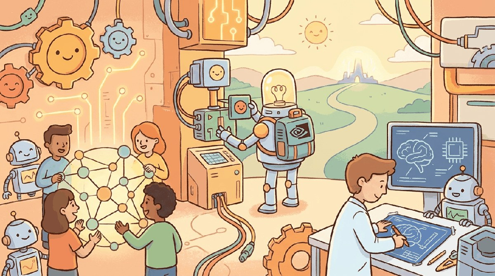

"The scaling wall is no longer a wall in parameters. It is a wall in megawatts."
Frontier, Silicon-Curious AI Agent
Chapter 57 planned the cluster. This chapter inventories the cutting edge: H100, H200, Blackwell, MI300, TPU v5e and v5p, Trainium, Cerebras, Groq, and the emerging analog and photonic stacks. Performance numbers, software stack maturity, and where each chip family is winning.
The story of 2026 frontier systems is one of consolidation and divergence at the same time. Consolidation, because NVIDIA acquired Groq in late 2025 and the inference-silicon market is now three players (NVIDIA, Cerebras, AMD) rather than ten. Divergence, because the workload split between training and inference, between centralized and decentralized, between cloud and edge, is wider than at any prior moment in the field. Cerebras CS-3 signed a $10B+, 750 MW deal with OpenAI in January 2026. Nous Psyche trained models across the public internet using DeMo with bandwidth requirements 1000-10000x lower than synchronous DDP. Apple's MLX became the on-device runtime for iOS Foundation Models. And FlashAttention-4 rewrote the inference kernel around Blackwell's asymmetric SMs. This chapter walks all five threads.
Chapter Overview
Hardware diversified in 2024 and 2025 in ways the prior decade did not see. This chapter walks the new frontier-systems map: non-NVIDIA silicon (Groq, Cerebras, Tenstorrent, AMD MI355), decentralized training (Nous Psyche, DeMo, DisTrO) that broke the co-located-datacenter assumption, edge LLMs (MLX, Apple Intelligence, Llama-Mobile) on Apple Silicon and beyond, FlashAttention-4 and Blackwell-era inference kernels, and the training-inference co-design discipline that the field stopped treating as separate concerns.
Frontier systems have moved from "NVIDIA plus FlashAttention plus DeepSpeed" to a genuine multi-vendor, multi-paradigm stack. This chapter is the 2026 picture, with enough specifics to plan for 2027.
- Compare non-NVIDIA silicon (Groq, Cerebras, Tenstorrent, AMD MI355) for training and inference workloads.
- Evaluate decentralized training approaches (Nous Psyche, DeMo, DisTrO) for cross-datacenter or federated runs.
- Architect an edge LLM deployment on Apple Silicon (MLX) or mobile (Llama-Mobile).
- Apply FlashAttention-4 and Blackwell-era inference kernels to a production serving stack.
- Design a training-inference co-design plan that survives quantization and serving constraints.
The hardware story is mostly platforms, not Python packages, but the relevant code-level entry points are:
pip install mlx mlx-lm # Apple Silicon LLM inference
pip install nous-psyche # decentralized training prototype (Solana-backed)
pip install flash-attn==4.0.0 # FlashAttention-4 (Blackwell)The other frontier silicon (Cerebras, Tenstorrent, AMD MI355) is accessed primarily through provider SDKs, not Python packages you install locally.
Sections in This Chapter
Prerequisites
- Compute planning from Chapter 57
- Inference optimization from Chapter 9
- Familiarity with GPU memory hierarchy (HBM, on-chip SRAM) helps
- 58.1 Beyond NVIDIA: Groq, Cerebras, Tenstorrent, AMD MI355 For ten years "what do you run an LLM on" had one answer. Advanced
- 58.2 Decentralized Training: Nous Psyche, DeMo, DisTrO For ten years, "frontier model training" implied a co-located GPU datacenter. Advanced
- 58.3 Edge LLMs: MLX, Apple Intelligence, Llama-Mobile Three independent forces aligned in 2025 to make on-device LLMs genuinely useful: Apple Silicon's unified memory normalized 32+ GB of fast shared RAM, quantization closed the 4-bit-to-fp16 quality... Advanced
- 58.4 FlashAttention-4 and Inference Kernels for Blackwell The kernel layer used to be invisible to architecture researchers. Advanced
- 58.5 Training-Inference Co-Design The first decade of LLM engineering treated training and inference as separate concerns. Advanced
What Comes Next
Chapter 64 closes Part XII with the question this whole part has been building toward: where does the AGI timeline actually land, what do the 2025-26 frontier benchmarks say, and what happens to the labor market on the way there. The systems and silicon described in this chapter are the substrate; Chapter 64 looks at the curve they are bending. Continue to Chapter 59: Distributed Training Systems.